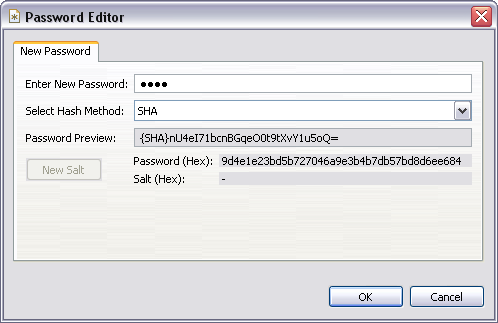
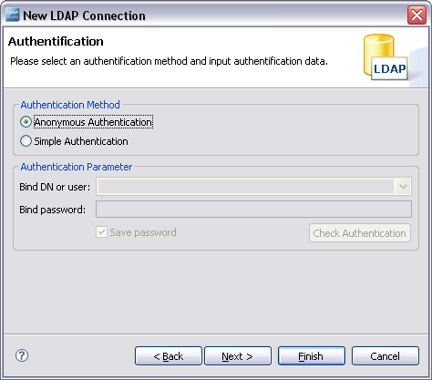
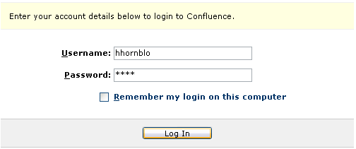

ApacheDS 2.0
Downloads
Documentation
- Basic User Guide
- Advanced User Guide
- Developer Guide
- Kerberos User Guide
- Configuration
- JavaDocs
- Cross-Reference
Support
Community
About Apache
3.1 - Authentication options
This section describes the authentication options of ApacheDS 2.0. Anonymous and simple binds are supported, as well as SASL mechanisms. Configuring and using the first two of them is described below with the help of examples.
What is authentication?
Authentication is the process of determining whether someone (or something) in fact is what he/she/it asserts to be.
Within ApacheDS you will likely want to authenticate clients in order to check whether they are allowed to read, add or manipulate certain data stored within the directory. The latter, i.e. whether an authenticated client is permitted to do something, is deduced during authorization.
Quite often, the process of authentication is delegated to a directory service by other software components. Because in doing so, authentication data (e.g. username, password) and authorization data (e.g. group relationships) are stored and managed centrally in the directory, and all connected software solutions benefit from it. The integration sections of this guide provide examples for Apache Tomcat, Apache HTTP servers, and others.
ApacheDS 2.0 supports simple authentication and anonymous binds while storing passwords within userPassword attributes in user entries. Passwords can be stored in clear text or one-way encrypted with a hash algorithm like MD5 or SHA1. Since version 1.5.1, SASL mechanism are supported as well. We start with anonymous binds.
Simple binds
Authentication via simple bind is widely used. The method is supported by ApacheDS 2.0 for all person entries stored within any partition, if they contain a password attribute. How does it work? An LDAP client provides the DN of a user entry and a password to the server, the parameters of the bind operation. ApacheDS checks whether the given password is the same as the one stored in the userpassword attribute of the given entry. If not, the bind operation fails (LDAP error code 49, LDAP_INVALID_CREDENTIALS), and the user is not authenticated.
Using command line tools
Assume this entry from the Seven Seas partition is stored within the directory (only a fragment with the relevant attributes is shown).
dn: cn=Horatio Hornblower,ou=people,o=sevenSeas
objectclass: person
objectclass: organizationalPerson
cn: Horatio Hornblower
sn: Hornblower
userpassword: pass
...
In the following search command, a user tries to bind with the given DN (option -D) but a wrong password (option -w). The bind fails and the command terminates without performing the search.
$ ldapsearch -h zanzibar -p 10389 -D "cn=Horatio Hornblower,ou=people,o=sevenSeas" \\
-w wrong -b "ou=people,o=sevenSeas" -s base "(objectclass=*)"
ldap_simple_bind: Invalid credentials
ldap_simple_bind: additional info: Bind failed: null
If the user provides the correct password during the call of the ldapsearch command, the bind operation succeeds and the seach operation is performed afterwards.
$ ldapsearch -h zanzibar -p 10389 -D "cn=Horatio Hornblower,ou=people,o=sevenSeas" \\
-w pass -b "ou=people,o=sevenSeas" -s base "(objectclass=*)"
version: 1
dn: ou=people,o=sevenSeas
ou: people
description: Contains entries which describe persons (seamen)
objectclass: organizationalUnit
objectclass: top
Binds from Java components using JNDI
Using JNDI, authentication via simple binds is accomplished by appropriate configuration. One option is to provide the parameters in a Hashtable object like this
import java.util.Hashtable;
import javax.naming.Context;
import javax.naming.InitialContext;
import javax.naming.NamingEnumeration;
import javax.naming.NamingException;
public class SimpleBindDemo {
public static void main(String[] args) throws NamingException {
if (args.length < 2) {
System.err.println("Usage: java SimpleBindDemo <userDN> <password>");
System.exit(1);
}
Hashtable env = new Hashtable();
env.put(Context.INITIAL_CONTEXT_FACTORY, "com.sun.jndi.ldap.LdapCtxFactory");
env.put(Context.PROVIDER_URL, "ldap://zanzibar:10389/o=sevenSeas");
env.put(Context.SECURITY_AUTHENTICATION, "simple");
env.put(Context.SECURITY_PRINCIPAL, args[0]);
env.put(Context.SECURITY_CREDENTIALS, args[1]);
try {
Context ctx = new InitialContext(env);
NamingEnumeration enm = ctx.list("");
while (enm.hasMore()) {
System.out.println(enm.next());
}
enm.close();
ctx.close();
} catch (NamingException e) {
System.out.println(e.getMessage());
}
}
}
If the DN of a user entry and the fitting password are provided as command line arguments, the program binds successfully and performs a search:
$ java SimpleBindDemo "cn=Horatio Hornblower,ou=people,o=sevenSeas" pass
ou=people: javax.naming.directory.DirContext
ou=groups: javax.naming.directory.DirContext
On the other hand, providing an incorrect password results in a failed bind operation. JNDI maps it to a NamingException:
$ java SimpleBindDemo "cn=Horatio Hornblower,ou=people,o=sevenSeas" quatsch
[LDAP: error code 49 - Bind failed: null]
In real life, you obviously want to separate most of the configuration data from the source code, for instance with the help of the jndi.properties file.
Passwords stored one-way encrypted
If passwords are stored in the directory in clear like above, the administrator (uid=admin,ou=system) is able to read them. This holds true even if authorization is enabled. The passwords would also be visible in exported LDIF files. This is often unacceptable.
Passwords not stored in clear text
ApacheDS does also support simple binds, if user passwords are stored one-way encrypted. An LDAP client, which creates user entries, applies a hash-function (SHA for instance) to the user passwords beforehand, and stores the users with these fingerprints as userpassword values (instead of the clear text values), for instance:
dn: cn=Horatio Hornblower,ou=people,o=sevenSeas
objectclass: person
objectclass: organizationalPerson
cn: Horatio Hornblower
sn: Hornblower
userpassword: {SHA}nU4eI71bcnBGqeO0t9tXvY1u5oQ=
...
The value “{SHA}nU4eI71bcnBGqeO0t9tXvY1u5oQ=” means that SHA (Secure Hash Algorithm) was applied to the password, and “nU4eI71bcnBGqeO0t9tXvY1u5oQ=” was the result (Base-64 encoded). Please note that it is not possible to calculate the source (“pass” in our case) back from the result. This is why it is called one-way encrypted – it is rather difficult to decrypt it. One may guess many times, calculate the hash values (the algorithms are public) and compare the result. But this would take a long time, especially if you choose a more complex password than we did (“pass”).
But how to obtain the hash value for a password?
With some lines of code, it is quite easy to accomplish this task programatically in Java:
import java.security.MessageDigest;
import java.security.NoSuchAlgorithmException;
import sun.misc.BASE64Encoder;
public class DigestDemo {
public static void main(String[] args) throws NoSuchAlgorithmException {
String password = "pass";
String algorithm = "SHA";
// Calculate hash value
MessageDigest md = MessageDigest.getInstance(algorithm);
md.update(password.getBytes());
byte[] bytes = md.digest();
// Print out value in Base64 encoding
BASE64Encoder base64encoder = new BASE64Encoder();
String hash = base64encoder.encode(bytes);
System.out.println('{'+algorithm+'}'+hash);
}
}
The output is “{SHA}nU4eI71bcnBGqeO0t9tXvY1u5oQ=”.
Another option is to use command line tools to calculate the hash value; the OpenSSL project provides such stuff. Furthermore many UI LDAP tools allow you to store passwords automatically encrypted with the hash algorithm of your choice. See below Apache Directory Studio as an example. The dialog automatically shows up if a userPassword attribute is to be manipulated (added, changed).

From an LDAP client point of view
From an LDAP client point of view, the behavior during authentication is the same as with passwords stored in clear. During a simple bind, a client sends DN and password (unencrypted, i.e. no hash algorithm applied) to the server. If ApacheDS detects, that the user password for the given DN is stored in the directory with a hash function applied, it calculates the hash value of the given password with the appropriate algorithm (this is why the algorithm is stored together with the hashed password). Afterwards it compares the result with the stored attribute value. In case of a match, the bind operation ends successfully:
$ ldapsearch -h zanzibar -p 10389 -D "cn=Horatio Hornblower,ou=people,o=sevenSeas" \\
-w pass -b "ou=people,o=sevenSeas" -s base "(objectclass=*)"
version: 1
dn: ou=people,o=sevenSeas
ou: people
description: Contains entries which describe persons (seamen)
objectclass: organizationalUnit
objectclass: top
Providing the hashed value of the userPassword attribute instead of the original value will be rejected by ApacheDS:
$ ldapsearch -h zanzibar -p 10389 -D "cn=Horatio Hornblower,ou=people,o=sevenSeas" \\
-w "{SHA}nU4eI71bcnBGqeO0t9tXvY1u5oQ=" -b "ou=people,o=sevenSeas" -s base "(objectclass=*)"
ldap_simple_bind: Invalid credentials
ldap_simple_bind: additional info: Bind failed: null
This is intended. If someone was able to catch this value (from an LDIF export for instance), s/he must still provide the password itself in order to get authenticated.
Please note that storing user passwords one-way encrypted only adds limited security. During the bind operation, the credentials are still transmitted unencrypted, if no SSL/TLS communication is used (thus you should definitely consider to do so).
Furthermore, if someone gets an LDIF file with userpassword values digested with SHA etc., s/he may be able to determine some of the passwords with brute force. Calculation of hash functions can be done very fast, and the attacker can attempt millions of values with ease, without you getting notice of it. Therefore protect your data, even if one-way encryption is applied to the passwords!
Anonymous binds
In some occasions it is appropriate to allow LDAP clients to permit operations without authentication. If data managed by the directory service is well known by all clients, it is not uncommon to allow search operations (not manipulation) within this data to all clients – without providing credentials. An example for this are enterprise wide telephone books, if clients access the directory service from the intranet.
Enable/disable anonymous binds
Anonymous access is enabled by default. Changing this is one of the basic configuration tasks (see 1.4.5 - Enable and disable anonymous access).
Example: Server behavior with anonymous binds disabled
Assume anonymous binds are disabled and our sample partition Seven Seas present in the server. Here is an example with a search operation performed by a command line tool as a client. It tries to connect anonymously (no DN and password given, i.e. options -D and -w missing) to the server. Afterwards the entry ou=people,o=sevenSeas should be displayed.
See the command and the resulting error message provided by the server below
$ ldapsearch -h zanzibar -p 10389 -b "ou=people,o=sevenSeas" -s one "(objectclass=*)"
ldap_search: Insufficient access
ldap_search: additional info: failed on search operation: Anonymous binds have been disabled!
Example: Server behavior with anonymous binds enabled
Now the same command performed against ApacheDS 1.5 with anonymous access enabled as described above. The behavior is different – the entry is visible.
$ ldapsearch -h zanzibar -p 10389 -b "ou=people,o=sevenSeas" -s base "(objectclass=*)"
version: 1
dn: ou=people,o=sevenSeas
ou: people
description: Contains entries which describe persons (seamen)
objectclass: organizationalUnit
objectclass: top
Other clients
The examples above have used a command line tool. Of course graphical tools and programmatical access (JNDI etc.) allow anonymous binds as well. Below is a screen shot from the configuration dialog of Apache Directory Studio as an example. During configuration of the connection data (“New LDAP Connection”, for instance), the option Anonymous Authentication leads to anonymous binds. Other UI tools offer this feature as well.

With anonymous access enabled it is not only possible to search the directory without providing username and password. With autorization disabled, anonymous users may also be able to modify data. It is therefore highly recommended to enable and configure the authorization subsystem as well. Learn more about authorization in the [3.2. Basic authorization] section.
How to authenticate a user by uid and password?
If you want to use simple binds with user DN and password within a Java component, in order to authenticate users programatically, in practice one problem arises: Most users do not know their DN. Therefore they will not be able to enter it. And even if they know it, it would be frequently very laborious due to the length of the DN. It would be easier for a user if s/he only has to probvide a short, unique ID and the password, like in this web form

Usually the ID is an attribute within the user’s entry. In our sample data (Seven Seas), each user entry contains the uid attribute, for instance uid=hhornblo for Captain Hornblower:
dn: cn=Horatio Hornblower,ou=people,o=sevenSeas
objectclass: person
objectclass: organizationalPerson
objectclass: inetOrgPerson
objectclass: top
cn: Horatio Hornblower
description: Capt. Horatio Hornblower, R.N
givenname: Horatio
sn: Hornblower
uid: hhornblo
mail: hhornblo@royalnavy.mod.uk
userpassword: {SHA}nU4eI71bcnBGqeO0t9tXvY1u5oQ=
But how to authenticate a user who provides “hhornblo”/“pass” instead of “cn=Horatio Hornblower,ou=people,o=sevenSeas”/“pass” with the help of ApacheDS?
An algorithm
In order to accomplish this task programmatically, one option is to perform the following steps
Arguments
- uid of a user (e.g. “hhornblo”)
- password proclaimed to be correct for the user
Steps
- Bind to ApacheDS anonymously, or with the DN of a technical user. In both cases it must be possible to search the directory afterwards (authorization has to be configured that way)
- Perform a search operation with an appropriate filter to find the user entry for the given ID, in our case “(&(objectClass=inetorgperson)(uid=hhornblo))”
- If the search result is empty, the user does not exist – terminate
- If the search result contains more than one entry, the given ID is not unique, this is likely a data error within your directory
- Bind to ApacheDS with the DN of the entry found in the previous search, and the password provided as argument
- If the bind operation fails, the password is wrong, and the result is false (not authenticated)
- If the bind is successful, authenticate the user
Sample code with JNDI
The algorithm described above is implemented by many software solutions which are able to integrate LDAP directories. You will learn more about some of them and their configuration options within a later section of this guide.
For illustration purposes, here is a simple Java program which performs the steps with the help of JNDI. It uses anonymous bind for the first step, hence it must be enabled (replace with a technical user, if it better meets your requirements).
import java.util.Hashtable;
import javax.naming.Context;
import javax.naming.NamingEnumeration;
import javax.naming.NamingException;
import javax.naming.directory.DirContext;
import javax.naming.directory.InitialDirContext;
import javax.naming.directory.SearchControls;
import javax.naming.directory.SearchResult;
public class AdvancedBindDemo {
public static void main(String[] args) throws NamingException {
if (args.length < 2) {
System.err.println("Usage: java AdvancedBindDemo <uid> <password>");
System.exit(1);
}
Hashtable env = new Hashtable();
env.put(Context.INITIAL_CONTEXT_FACTORY, "com.sun.jndi.ldap.LdapCtxFactory");
env.put(Context.PROVIDER_URL, "ldap://zanzibar:10389/");
env.put(Context.SECURITY_AUTHENTICATION, "simple");
String uid = args[0];
String password = args[1];
DirContext ctx = null;
try {
// Step 1: Bind anonymously
ctx = new InitialDirContext(env);
// Step 2: Search the directory
String base = "o=sevenSeas";
String filter = "(&(objectClass=inetOrgPerson)(uid={0}))";
SearchControls ctls = new SearchControls();
ctls.setSearchScope(SearchControls.SUBTREE_SCOPE);
ctls.setReturningAttributes(new String[0]);
ctls.setReturningObjFlag(true);
NamingEnumeration enm = ctx.search(base, filter, new String[] { uid }, ctls);
String dn = null;
if (enm.hasMore()) {
SearchResult result = (SearchResult) enm.next();
dn = result.getNameInNamespace();
System.out.println("dn: "+dn);
}
if (dn == null || enm.hasMore()) {
// uid not found or not unique
throw new NamingException("Authentication failed");
}
// Step 3: Bind with found DN and given password
ctx.addToEnvironment(Context.SECURITY_PRINCIPAL, dn);
ctx.addToEnvironment(Context.SECURITY_CREDENTIALS, password);
// Perform a lookup in order to force a bind operation with JNDI
ctx.lookup(dn);
System.out.println("Authentication successful");
enm.close();
} catch (NamingException e) {
System.out.println(e.getMessage());
} finally {
ctx.close();
}
}
}
Some example calls:
$ java AdvancedBindDemo unknown sailor
Authentication failed
$ java AdvancedBindDemo hornblo pass
dn: cn=Horatio Hornblower,ou=people,o=sevenSeas
Authentication successful
$ java AdvancedBindDemo hornblo quatsch
dn: cn=Horatio Hornblower,ou=people,o=sevenSeas
[LDAP: error code 49 - Bind failed: null]
The examples consist of an unknown user (an inetOrgPerson entry with uid=unknown does not exist), a successful authenttication, and an attempt with an existing uid but a wrong password.
Resources
- RFC 2829 Authentication Methods for LDAP
- The Secure Hash Algorithm Directory MD5, SHA-1 and HMAC Resources